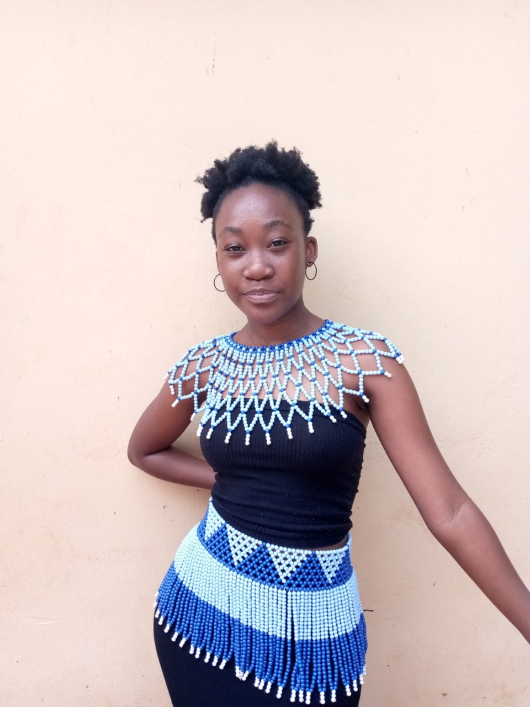

Welcome to Nahama Mango's Portfolio
Copywriter | Innovator | Creator

Copywriter | Innovator | Creator
Nahama Shannon Nothabiso Mango Copywriter
I am a creative problem solver, which drives my passion for copywriting. Writing and speaking have been my supreme interests since childhood. I enjoyed composing songs and poetry, and although I lost that passion for a while, Vega helped reignite it. As a Durban woman with an African background, I value community and culture. As a critical thinker and ambitious individual, I’m eager for opportunities to advance my career as a copywriter, believing we are a connected community.
In addition to my role as a copywriter, I also work as a radio presenter. My responsibilities include voice-over projects, writing radio scripts, and hosting shows. Working in a radio station is one of the most rewarding experiences, as it offers opportunities to learn more about people and the world around us. I have a non-profit organisation called the Nahama Foundation, where I give back to the community and make donations. In 2021, I completed a one-year course in beauty therapy and graduated as a beautician. Outside work, I enjoy spending time with my family, being outdoors, trying new activities, and focusing on my talents.
Grade 12: Matric
2016 - 2020
Beauty Therapy
2022
INT101 - Introduction into Micro-computing
2021
Bachelor of Arts degree in Creative Brand Communications (Core: Copywriting)
2022 - 2024
Discover the Cadbury Campaign: Spreading sweetness with innovative ideas. Click to learn more!
Explore the Nestlé Campaign: Innovations in sustainability and nutrition. Click to learn more!
Dive into the Coca-Cola Campaign: Moments of happiness around the globe. Click to learn more!
Join the Unilever Campaign: Leading the charge in eco-friendly products. Click to learn more!
Experience the Pepsi Campaign: Energizing the world, one sip at a time. Click to learn more!
I have experience writing radio scripts, conducting interviews, collaborating with fellow presenters, delivering political analyses, and performing voice-overs.
Referees: Ms Anele Zake (Supervisor) | ODS FM Online Radio Station (2021 October–December, 3 months)
Contact: 215144561654
Assisted during open day and graduation events. Selected as a brand ambassador for 2024.
Conducted charity work for underprivileged homes and communities. Received a certificate for my non-profit organization for excellence during Miss Teen Universe South Africa 200.
Feel free to reach out to me on my socials: